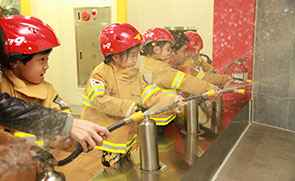
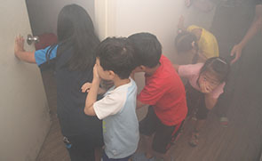
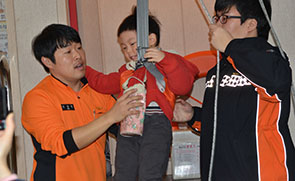
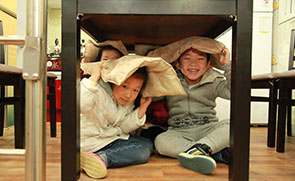

<?php include 'header.php'; ?>

	<div id="sub_wrap">
		<div class="inner clearfix">

			<nav id="left_area">
				<h3>참여교육</h3>
				<ul class="sub_menu">
					<li><a href="sub02-01.html">칭찬합시다</a></li>
					<li><a href="sub02-02-01.html" class="ico_submenu">소방안전교육</a>
						<ul class="sub_depth02 clearfix">
							<li><a href="sub02-02-01.html">- 소방서 안전체험교실</a></li>
							<li><a href="sub02-02-02.html">- 이동안전차량 체험교육</a></li>
							<li><a href="sub02-02-03.html">- 출장 소방안전교육</a></li>
							<li><a href="sub02-02-04.html">- 소방안전교육 예약신청</a></li>
						</ul>
					</li>
					<li><a href="sub02-03-01.html" class="ico_submenu">안전체험관 예약</a>
						<ul class="sub_depth02 clearfix">
							<li><a href="sub02-03-01.html">- 안전체험관 안내</a></li>
							<li><a href="https://fire.seoul.go.kr/boramea" class="linkout_menu" target="_blank" title="새창열기">- 보라매 안전체험관</a></li>
							<li><a href="https://fire.seoul.go.kr/gwangnaru" class="linkout_menu" target="_blank" title="새창열기">- 광나루 안전체험관</a></li>
						</ul>
					</li>
					<li><a href="sub02-04.html">다중이용업소 안전교육</a></li>
				</ul>
			</nav>
			<!-- // 좌측메뉴 -->

			<section id="right_area">
				<div class="breadcrumb clearfix">
					<h2 class="jumbo">소방서 안전체험교실</h2>
					<ul>
						<li><a href="index.html" class="gohome">홈으로</a></li>
						<li>참여교육</li>
						<li>소방안전교육</li>
						<li>소방서 안전체험교실</li>
					</ul>
				</div>
				<!-- // jumbotron + breadcrumb -->

				<div class="subpage">

					<h3>서울소방재난본부 안전교육</h3>
					<p class="txt">안녕하십니까. 서울소방재난본부는 시민고객 여러분의 자율재난대처능력 향상을 위하여 소방안전교육을 실시하고 있습니다. <br />서울에는 25개구에 24개의 소방서가 있으며 여러분은 가장 가까운 곳에서 정기교육 및 수시교육을 받으실 수 있습니다. <br />유아, 초ㆍ중ㆍ고등학생, 대학생, 직장인, 주부, 장애인, 노인 등 서울 시민 모두가 안전해지는 그날까지 최선을 다하겠습니다.</p>

					<h3>소방서 소방안전교실</h3>
					<p class="txt">소방서 내에 설치되어 있는 소방안전교실에서 이론교육 뿐만 아니라 119 신고하기, 소화기 시뮬레이션, 연기피난, 지진체험, 구조대 및 완강기 대피 등 현장감 넘치는 소방안전교육을 체험할 수 있습니다.</p>
					<div class="imgbox">
						<ul class="charList2 clearfix">
							<li><div class="charImg"></div><p class="charTxt">소화기체험</p></li>
							<li><div class="charImg"></div><p class="charTxt">연기대피체험</p></li>
							<li><div class="charImg"></div><p class="charTxt">완강기체험</p></li>
							<li><div class="charImg"></div><p class="charTxt">지진체험</p></li>
						</ul>
					</div>
					<dl class="subTxt">
						<dt>소방안전교실이 있는 소방서 (22개 소방서)</dt>
						<dd>종로, 광진, 용산, 영등포, 성북, 은평, 강남, 서초, 강서, 도봉, 구로, 노원, 관악, 송파, 양천, 중랑, 동작, 서대문, 동대문, 마포, 강북, 성동</dd>
						<dt>소방안전교실이 없는 소방서</dt>
						<dd>중부, 강동</dd>
						<dt>지진체험이 가능한 소방서 (11개 소방서)</dt>
						<dd>광진, 동대문, 은평, 서초, 마포, 도봉, 구로, 강북, 양천, 성동, 강남</dd>
						<dt>안전체험의 종류 및 방법은 소방서마다 조금씩 다를 수 있으며 체험교실이 없는 소방서에서도 자체 교육 기자재를 활용한 소방안전교실을 운영하고 있습니다.</dt>
					</dl>
				</div>
				<!-- // 서브컨텐츠 -->
			</section>
		</div>
	</div>

<?php include 'footer.php'; ?>